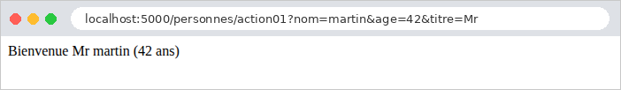
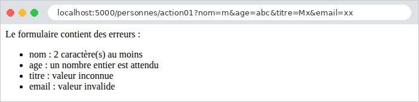

3. Le modèle d'une action
Une action a besoin des informations envoyées par le navigateur : les paramètres de l'URL ([?nom=martin&age=42]), les champs d'un formulaire, le corps JSON d'une requête, parfois un entête HTTP. Le cours d'origine appelle modèle de l'action l'ensemble de ces informations. Ce chapitre montre comment une action [Flask] les obtient, les convertit dans le bon type et les valide. Ce travail s'appelle la liaison de données (*data binding*).
[Flask] est ici beaucoup plus sobre que d'autres frameworks : il donne accès aux informations de la requête, sous forme de chaînes de caractères, et s'arrête là. Convertir ["42"] en l'entier 42, vérifier qu'un nom a au moins deux caractères, rassembler les champs dans un objet : tout cela est à la charge de l'application. Nous le ferons d'abord à la main (exemple 07), puis avec la bibliothèque [Pydantic] (exemples 08 à 12), qui décrit un modèle par une classe dont chaque champ porte son type et ses contraintes. Au chapitre suivant, les formulaires HTML seront confiés à une autre bibliothèque, [WTForms], faite pour eux ; [Pydantic] reste l'outil naturel pour les paramètres d'une URL et pour les corps JSON des API.
Attention au vocabulaire : le mot « modèle » désignera surtout, au chapitre suivant, les données qu'une action transmet à sa vue. Le modèle d'une action, au sens de ce chapitre, est ce qu'elle reçoit.
Les exemples 07 à 12 se lancent comme ceux du chapitre précédent : un terminal ouvert sur le dossier de l'exemple, l'environnement virtuel activé, [python app.py] ; [Ctrl-C] arrête le serveur. Leurs fichiers [app.py] se ressemblent tous : une fabrique [create_app] qui crée l'application, règle le fournisseur JSON (accents conservés, clés dans leur ordre, cf. exemple 03) et enregistre un blueprint. Nous ne les commenterons que lorsqu'ils apportent quelque chose de nouveau.
3.1. Exemple 07 : les paramètres de l'URL
Les paramètres de l'URL sont la partie qui suit le [?] : [?nom=martin&age=42]. Cette partie s'appelle la chaîne de requête (*query string*). Chaque paramètre est un couple [nom=valeur] ; les couples sont séparés par des [&]. Le fichier [controllers/parametres.py] :
- ligne 11 : [request.args] contient les paramètres de l'URL, déjà décodés par [Werkzeug]. C'est un dictionnaire particulier, un [MultiDict], dont nous verrons à l'exemple 10 qu'il accepte plusieurs valeurs par clé. Sa méthode [get] rend la valeur d'un paramètre, ou [None] s'il est absent. Contrairement à [request.args["nom"]], qui lèverait une exception pour un paramètre absent, [get] ne provoque jamais d'erreur ;
- ligne 12 : l'action affiche la valeur, et son type : [type(x)] est la classe de [x], [__name__] le nom de cette classe. Une valeur tirée de l'URL est toujours une chaîne ([str]) ;
- ligne 19 : le paramètre [type] de [get] indique une fonction de conversion, appliquée à la chaîne : ici [int], la classe des entiers, dont l'appel [int("42")] rend 42. Si la conversion échoue ([int("abc")] lève une [ValueError]), [get] rend [None], comme pour un paramètre absent : l'action ne peut pas distinguer les deux cas, et l'erreur de saisie passe inaperçue ;
- lignes 26-35 : un paramètre obligatoire, et une conversion faite à la main, qui distingue les deux erreurs possibles. [abort(400, message)] arrête l'action par une réponse 400 (*Bad Request*, la requête est incorrecte), accompagnée du message (cf. exemple 03). L'instruction [try] / [except ValueError] intercepte l'exception levée par [int] ;
- ligne 42 : une valeur par défaut, utilisée si le paramètre manque (ou si sa conversion échoue). C'est le cas typique du numéro de page d'une liste ;
- ligne 50 : rien n'oblige à nommer la variable [Python] comme le paramètre de l'URL. Les moteurs de recherche utilisent souvent un paramètre court, [q] (*query*) ;
- ligne 57 : [to_dict()] convertit le [MultiDict] en dictionnaire [Python] ordinaire (en ne gardant que la première valeur de chaque paramètre), que l'action rend : [Flask] le transforme en JSON (cf. exemple 03).
Testons chaque action avec [curl]. Un paramètre présent, puis absent :
Les guillemets autour de l'URL sont nécessaires dans un terminal : sans eux, le shell interpréterait le [&] (qui lance une commande en arrière-plan sous [Linux]) et le [?]. Une valeur contenant des espaces ou des caractères spéciaux doit être encodée dans l'URL : l'espace devient [%20], le [&] devient [%26] (sinon, il séparerait deux paramètres). Le navigateur le fait tout seul ; avec [curl], il faut l'écrire. [Werkzeug] décode la valeur avant de la ranger dans [request.args] :
La conversion par [type=int], réussie puis ratée :
Le paramètre obligatoire de l'action 03, absent puis invalide :
La valeur par défaut, et le paramètre renommé :
Enfin, tous les paramètres d'un coup. Le paramètre [nom] apparaît deux fois : [to_dict()] n'en garde que la première valeur.
L'âge est resté une chaîne (["42"], entre guillemets dans le JSON) : aucune conversion n'a été demandée. Dans un navigateur (ici [Chromium]), le JSON apparaît sur une seule ligne : [Flask] n'indente le JSON qu'en mode debug, et la capture a été faite sans ; la case « Pretty-print » le présenterait indenté. La barre d'adresse montre au passage l'encodage des caractères accentués dans l'URL ([é] devient [%C3%A9], ses deux octets en [UTF-8]) :

Ce premier exemple montre les limites de l'approche manuelle : pour chaque paramètre, il faut écrire la lecture, la conversion, le traitement de l'absence et de l'erreur. Avec dix paramètres, le code de l'action serait noyé sous ces vérifications. Il vaut mieux décrire ce qu'on attend, et laisser une bibliothèque le vérifier. C'est l'objet de l'exemple suivant.
3.2. Exemple 08 : un modèle d'action décrit par une classe
[Pydantic] est la bibliothèque de validation de données la plus utilisée en [Python] (elle est au cœur du framework [FastAPI]). On y décrit les données attendues par une classe : chaque attribut porte un type, et éventuellement des contraintes. [Pydantic] se charge de convertir les données reçues dans ces types, et de vérifier les contraintes. Elle est installée dans l'environnement virtuel des exemples (fichier [requirements.txt]).
3.2.1. Le modèle : models/personne.py
- ligne 8 : un modèle [Pydantic] est une classe qui hérite de [BaseModel]. Ses attributs sont déclarés au niveau de la classe, avec leur type, comme dans une [dataclass] (exemple 06) ;
- ligne 10 : la configuration du modèle. [str_strip_whitespace=True] retire les espaces qui entourent les chaînes reçues : un nom saisi [" martin "] devient ["martin"] avant d'être validé. L'attribut [model_config] n'est pas un champ du modèle : [Pydantic] reconnaît ce nom réservé ;
- ligne 13 : le champ [nom]. [Annotated[str, Field(...)]] se lit « le type [str], annoté par [Field(...)] ». [Annotated], du module standard [typing], permet d'attacher à un type des informations supplémentaires, que [Python] ignore mais que les bibliothèques lisent : ici, les contraintes de [Pydantic], une longueur de 2 à 20 caractères ([min_length], [max_length]). Le champ n'a pas de valeur par défaut : il est obligatoire ;
- ligne 15 : le type [int] : [Pydantic] convertit la chaîne ["42"] en l'entier 42, et refuse ["abc"]. Les contraintes [ge] (*greater or equal*, supérieur ou égal) et [le] (*less or equal*) bornent la valeur. Il existe aussi [gt] et [lt] pour les inégalités strictes ;
- ligne 17 : [Literal["Mr", "Mme", "Melle"]] est le type des trois valeurs citées, et d'elles seules ;
- ligne 19 : [EmailStr] est le type d'une adresse électronique ; [Pydantic] en vérifie la syntaxe grâce à la bibliothèque [email-validator] (installée elle aussi par [requirements.txt]). [EmailStr | None] : une adresse, ou [None]. La valeur par défaut [= None] rend le champ facultatif.
Ce modèle décrit les données attendues ; il ne contient aucune instruction de vérification. C'est ce qu'on appelle un style déclaratif.
3.2.2. L'action : controllers/personnes.py
- ligne 16 : la méthode de classe [model_validate] crée un objet [PersonneModele] à partir d'un dictionnaire, ici celui des paramètres de l'URL. Elle fait deux choses, dans cet ordre : - la liaison : chaque valeur du dictionnaire est affectée au champ de même nom, après conversion dans le type du champ (["42"] → 42) ; - la validation : les contraintes de chaque champ sont vérifiées (longueur, bornes, valeurs permises...).
- Si l'une ou l'autre échoue, [model_validate] lève une exception [ValidationError], qui contient la liste de toutes les erreurs (et pas seulement la première). L'action ne la traite pas : elle s'arrête ; nous allons voir qui s'en charge ;
- ligne 19 : [model_dump()] rend l'objet sous forme de dictionnaire, que [Flask] sait convertir en JSON ;
- ligne 20 : le type de l'âge, pour montrer que la conversion a eu lieu.
3.2.3. Le traitement de l'erreur : app.py
- lignes 17-21 : le décorateur [@app.errorhandler(ValidationError)] enregistre un gestionnaire d'exceptions : quand une action lève une [ValidationError] (ou une exception d'une classe dérivée), [Flask] appelle cette fonction, avec l'exception en paramètre, et envoie sa valeur de retour comme réponse. Déclaré sur l'application, le gestionnaire vaut pour toutes ses actions : chaque action qui valide un modèle en profite, sans écrire une ligne de traitement d'erreur ;
- ligne 19 : [e.errors()] rend la liste des erreurs. Chacune est un dictionnaire ; on en garde deux informations : [loc] (*location*), le champ concerné, sous forme de tuple ([("nom",)], cf. exemple 10 pour un tuple plus long), et [msg], le message. L'expression [[... for err in e.errors()]] est une liste en compréhension : elle construit une liste en appliquant l'expression de gauche à chaque élément ;
- ligne 21 : un tuple [(corps, code)] (cf. exemple 03) : un dictionnaire, converti en JSON, et le code 400.
3.2.4. Exécution
Un modèle valide :
L'âge est bien devenu un entier (sans guillemets dans le JSON), et l'adresse absente vaut [None] ([null] en JSON). Un nom entouré d'espaces ([%20]) et une adresse présente :
Aucun paramètre : les trois champs obligatoires manquent.
Quatre champs invalides à la fois :
Toutes les erreurs sont signalées en une fois, ce qui permet à l'utilisateur de tout corriger d'un coup. Les messages sont en anglais : [Pydantic] n'est pas traduite. L'exemple suivant les remplace par des messages français.
3.3. Exemple 09 : la validation faite par l'action
Dans l'exemple 08, un modèle invalide interrompt l'action, et c'est le gestionnaire de l'application qui répond. C'est commode pour une API, dont les clients sont des programmes qui attendent une réponse d'erreur normalisée. Mais une page web préfère souvent réafficher le formulaire avec les messages d'erreur : c'est alors l'action qui doit décider de ce qu'elle fait d'un modèle invalide. Le modèle [models/personne.py] est celui de l'exemple 08.
3.3.1. Les messages en français : models/messages.py
- lignes 5-14 : chaque erreur de [Pydantic] a un type, un identifiant stable (["missing"] pour un champ absent, ["string_too_short"] pour une chaîne trop courte...), indépendant du message anglais. Le dictionnaire [MESSAGES] associe à chaque type un message français. Certains contiennent des marques [{min_length}], [{ge}]... : la documentation de [Pydantic] donne, pour chaque type d'erreur, les valeurs de son contexte ;
- lignes 20-21 : le nom du champ en erreur, tiré du tuple [loc]. [".".join(...)] assemble les éléments du tuple, convertis en chaînes, en les séparant par des points ;
- lignes 25-30 : le message français d'une erreur. [MESSAGES.get(...)] rend [None] pour un type d'erreur absent du dictionnaire : on garde alors le message anglais de [Pydantic]. Sinon, [format] remplace chaque marque [{nom}] du message par la valeur de même nom du contexte : ["{min_length} caractère(s) au moins".format(min_length=2)] donne ["2 caractère(s) au moins"]. La notation [**dictionnaire] passe les couples du dictionnaire comme paramètres nommés ; [erreur.get("ctx", {})] rend un dictionnaire vide pour une erreur sans contexte.
Cette technique (traduire à partir du type de l'erreur) est celle qu'on retrouvera dans l'étude de cas : les messages y sont désignés par des clés, traduites dans la langue de l'utilisateur.
3.3.2. L'action : controllers/personnes.py
- lignes 14-19 : l'action intercepte elle-même la [ValidationError], dans un bloc [try] / [except]. En cas d'erreur, elle construit une liste HTML des erreurs ([<ul>], une balise [<li>] par erreur) ;
- ligne 22 : en cas de succès, un message de bienvenue. Le nom est passé par la fonction [escape] de la bibliothèque [markupsafe] (installée avec [Flask]). [escape] remplace les caractères qui ont un sens en HTML ([<], [>], [&], ["], [']) par leurs entités ([<], [>]...) : ils s'afficheront tels quels au lieu d'être interprétés. Sans cette précaution, un utilisateur pourrait saisir un « nom » contenant du HTML, voire du [JavaScript], qui s'exécuterait dans le navigateur de quiconque afficherait la page. C'est la faille de sécurité la plus répandue du web, l'injection de script (*XSS*, *cross-site scripting*). Le titre et l'âge n'ont pas besoin de cette protection : leurs valeurs ont été vérifiées par le modèle (l'une des trois valeurs permises, un entier). Au chapitre suivant, le moteur de vues [Jinja2] fera cet échappement automatiquement, pour toute valeur insérée dans une page.
Une saisie valide, puis une saisie comportant quatre erreurs :


La réponse brute de la seconde requête, et celle d'un nom qui contient du HTML :
Le nom [<b>martin</b>] (encodé [%3Cb%3E...] dans l'URL) est affiché tel quel, sans être mis en gras : ses balises ont été neutralisées. Remarquons que la réponse est cette fois un code 200 : c'est l'action qui a choisi de rendre une page normale contenant les erreurs.
3.4. Exemple 10 : les paramètres multiples
Un même paramètre peut apparaître plusieurs fois dans une URL : [?couleur=rouge&couleur=vert]. C'est ce qu'envoie un navigateur pour un groupe de cases à cocher de même nom, ou une liste à sélection multiple (chapitre suivant). Le fichier [controllers/tableaux.py] :
- ligne 14 : [get] ne rend que la première valeur du paramètre ;
- ligne 21 : [getlist] rend toutes ses valeurs, dans une liste, vide si le paramètre est absent. C'est la particularité du [MultiDict] : il garde, pour chaque clé, la liste de ses valeurs ;
- lignes 27-34 : la liste est validée par un modèle [Pydantic]. Cette fois, le modèle est construit par un appel ordinaire, [ChoixModele(couleur=couleurs)], les champs étant passés comme paramètres nommés : c'est équivalent à [model_validate] sur un dictionnaire. L'objet créé ne sert à rien d'autre qu'à valider : on ne le conserve pas. L'expression [not erreurs] vaut [True] pour une liste vide.
Le modèle [models/choix.py] :
- ligne 10 : le type [list[Literal["rouge", "vert", "bleu"]]] est celui d'une liste dont chaque élément est l'une des trois couleurs. La contrainte [min_length=1], appliquée à une liste, porte sur son nombre d'éléments : il en faut au moins un.
Le fichier [models/messages.py] est celui de l'exemple 09. Les résultats :
La validation, réussie, puis ratée pour une couleur inconnue, puis pour une liste vide :
L'erreur sur la couleur inconnue désigne [couleur.1] : le tuple [loc] de l'erreur est [("couleur", 1)], le champ et l'indice de l'élément fautif dans la liste (le deuxième, les indices commençant à 0).
3.5. Exemple 11 : les paramètres d'une requête POST
Les exemples précédents utilisaient des requêtes GET, dont les paramètres sont dans l'URL. Une requête POST transporte ses données dans son corps, sous deux formes principales :
- les champs d'un formulaire HTML : le corps a la même syntaxe qu'une chaîne de requête ([nom=martin&age=42]), et son type (entête [Content-Type]) est [application/x-www-form-urlencoded] ;
- un document JSON, envoyé par un programme ([JavaScript] dans une page, client d'une API...) : le type est [application/json].
Le fichier [controllers/post.py] :
- ligne 13 : [post.post(...)] : le premier [post] est le blueprint, le second la méthode qui déclare une route pour la méthode HTTP POST (cf. exemple 02) ;
- ligne 16 : [request.content_type] est l'entête [Content-Type] de la requête ;
- ligne 18 : [request.form] contient les champs d'un formulaire envoyé en POST. C'est, comme [request.args], un [MultiDict]. [to_dict(flat=False)] en fait un dictionnaire dont chaque valeur est la liste des valeurs du champ ;
- ligne 26 : [request.get_json()] désérialise un corps JSON : le texte JSON devient un objet [Python] (un dictionnaire pour un objet JSON, une liste pour un tableau JSON...). Si le corps n'est pas déclaré comme du JSON, [get_json] provoque une erreur 415 (*Unsupported Media Type*) ; s'il l'est, mais que le texte est mal formé, une erreur 400 ;
- ligne 32 : un champ, lu comme un paramètre de l'URL ;
- lignes 38-45 : le modèle [PersonneModele] de l'exemple 08, lié cette fois aux champs du formulaire. Le code est le même qu'avec les paramètres de l'URL : seule la source du dictionnaire change. [sorted] trie les messages, pour une réponse stable.
Avec [curl], l'option [-d] (*data*) envoie un corps ; la requête devient alors une requête POST, de type [application/x-www-form-urlencoded], sauf si l'option [-H] (*header*) déclare un autre type. L'option [-X POST] fixe explicitement la méthode (elle est facultative ici). Les champs d'un formulaire, dont un champ répété :
Un corps JSON, qui contient un entier et un tableau :
Les guillemets du JSON sont précédés d'un [\] pour ne pas terminer la chaîne de la commande ; sous [Linux] et [macOS], on peut aussi entourer le JSON d'apostrophes : [-d '{"nom": "martin"}']. Contrairement aux champs d'un formulaire, le JSON transporte des types : l'âge est déjà un entier. Un corps qui n'est pas du JSON, puis un JSON mal formé :
Un champ unique, puis la même URL demandée en GET :
L'URL existe, mais pas pour la méthode GET : [Flask] répond 405 (*Method Not Allowed*), et son entête [Allow] indique les méthodes acceptées ([OPTIONS] est traitée automatiquement par [Flask] pour toute route). Enfin, le modèle lié aux champs du formulaire, valide puis invalide :
3.6. Exemple 12 : liaison et validation personnalisées
Les types standard ne suffisent pas toujours. Cet exemple montre trois façons d'étendre la liaison et la validation :
- un convertisseur de chemin : une date au format français, [23-09-2026], dans le chemin de l'URL ;
- un décorateur qui fournit à l'action un paramètre qui ne vient pas de l'URL, mais d'un entête HTTP ;
- des types « maison » pour [Pydantic] : une contrainte (pas d'espace) et une conversion (une date [jj/mm/aaaa]).
3.6.1. Un convertisseur de chemin : liaison/date_fr.py
Nous avons rencontré à l'exemple 02 les convertisseurs de [Werkzeug] : [<int:id>] n'accepte qu'un entier, et le convertit. On peut en écrire de nouveaux.
- ligne 9 : un convertisseur est une classe qui hérite de [BaseConverter] ;
- ligne 11 : l'attribut [regex] est une expression régulière, qui décrit la forme du morceau de chemin accepté : [\d] désigne un chiffre, [{2}] la répétition de ce qui précède, ici deux chiffres. Le préfixe [r] de la chaîne (*raw string*) empêche [Python] d'interpréter les [\]. Le routage n'essaie ce convertisseur que sur un morceau de chemin de cette forme ;
- lignes 14-20 : [to_python] transforme le texte du chemin en objet [Python], ici une [date]. [datetime.strptime] (*string parse time*) analyse une chaîne selon un format : [%d] le jour, [%m] le mois, [%Y] l'année sur quatre chiffres ; [.date()] garde la date sans l'heure. [strptime] vérifie que la date existe : [31-02-2026] a la bonne forme, mais lève une [ValueError]. Le convertisseur lève alors la [ValidationError] de [Werkzeug] (à ne pas confondre avec celle de [Pydantic]) : pour le routage, la route ne correspond pas à l'URL, qui aboutira donc à une erreur 404 si aucune autre route ne lui correspond ;
- lignes 23-24 : l'opération inverse, utilisée par [url_for] pour construire une URL à partir d'une date. [strftime] (*string format time*) met une date en forme.
Le convertisseur est enregistré dans [app.py] :
- ligne 12 : [app.url_map] est la table de routage de l'application ; son dictionnaire [converters] associe un nom à chaque convertisseur ([int], [path]...). On y ajoute le nôtre, sous le nom [datefr]. L'enregistrement doit précéder celui des blueprints qui l'utilisent.
3.6.2. Un paramètre fourni par un décorateur : liaison/langue.py
Une action [Flask] reçoit en paramètres les variables du chemin, et rien d'autre. Pour lui fournir une autre information, on peut décorer l'action : le décorateur remplace l'action par une fonction qui calcule l'information, puis appelle l'action en la lui passant.
- ligne 9 : un décorateur est une fonction qui reçoit une fonction (ici l'action) et en rend une autre (cf. exemple 01). Écrire [@avec_langue] au-dessus de [def bonjour(...)] revient à écrire, après la définition, [bonjour = avec_langue(bonjour)] ;
- ligne 13 : la fonction qui remplacera l'action. [*args] reçoit, dans un tuple, les paramètres positionnels, [**kwargs] (*keyword arguments*), dans un dictionnaire, les paramètres nommés. C'est ainsi que [Flask] passe les variables du chemin ([id=3]) : la fonction les reçoit sans avoir à les connaître ;
- ligne 16 : on ajoute un paramètre nommé [langue]. [request.accept_languages] est l'entête [Accept-Language] de la requête, déjà analysé par [Werkzeug]. Le navigateur y indique les langues de son utilisateur, par ordre de préférence : [fr-FR,fr;q=0.9,en;q=0.8] (le coefficient [q] mesure la préférence, de 0 à 1). [best_match] choisit, parmi les langues proposées par l'application, celle que l'utilisateur préfère, ou la valeur [default] si aucune ne convient ;
- ligne 17 : l'appel de l'action d'origine, avec les paramètres reçus et le nouveau. Les notations [*args] et [**kwargs] déplient cette fois le tuple et le dictionnaire en paramètres ;
- ligne 12 : la fonction [action_avec_langue] prend le nom ([__name__]) et la documentation de l'action. C'est indispensable ici : [Flask] nomme chaque route d'après le nom de sa fonction (le [bonjour] de [url_for("exemples.bonjour")]), et refuserait d'enregistrer deux routes portant le même nom, [action_avec_langue], si deux actions utilisaient le décorateur.
Nous retrouverons ce procédé tout au long du cours : les décorateurs [@connexion_requise] et [@role_requis] du chapitre sur l'authentification sont bâtis de la même façon.
3.6.3. Des types « maison » pour Pydantic : liaison/types.py
- lignes 11-14 : une fonction de validation : elle reçoit la valeur du champ, la rend si elle convient, lève une [ValueError] sinon. Le message de l'exception devient celui de l'erreur de validation ;
- ligne 19 : le type [SansEspace] est le type [str], annoté par [AfterValidator(sans_espace)] : [Pydantic] appellera la fonction après avoir vérifié (et au besoin converti) la valeur en [str]. On définit ainsi, une fois, un type réutilisable dans tous les modèles, comme un type ordinaire ;
- lignes 24-30 : une fonction de conversion. Le type [date] de [Pydantic] accepte les chaînes au format international, [2026-09-23] ; nous voulons le format français [23/09/2026]. La fonction reçoit la valeur brute : si c'est une chaîne, elle la convertit en [date]. Toute autre valeur (une [date] déjà construite, par exemple) est rendue telle quelle ;
- ligne 33 : [BeforeValidator] : la fonction est appelée avant la validation du type [date], qui reçoit donc une [date] déjà construite.
3.6.4. Le contrôleur : controllers/exemples.py
- lignes 14-18 : la variable de chemin [jour] utilise le convertisseur [datefr] : l'action reçoit une [date]. [url_for] construit l'URL de cette même action à partir de la date, grâce à la méthode [to_url] du convertisseur. La barre [\] en fin de ligne continue l'instruction sur la ligne suivante ; deux chaînes littérales qui se suivent sont concaténées ;
- lignes 23-25 : l'ordre des décorateurs compte. Ils s'appliquent de bas en haut : [@avec_langue] transforme d'abord l'action, puis [@exemples.get] enregistre la fonction transformée dans le blueprint. Dans l'ordre inverse, le blueprint enregistrerait l'action d'origine, et le paramètre [langue] ne serait jamais fourni ;
- lignes 30-32 : un modèle qui utilise les deux types « maison », comme des types ordinaires. Les deux champs sont facultatifs ;
- lignes 45-49 : un gestionnaire d'exceptions, déclaré cette fois sur le blueprint : il ne traite que les exceptions levées par les actions de ce blueprint. [removeprefix] retire du message le préfixe ["Value error, "] que [Pydantic] ajoute aux messages des [ValueError]. La réponse est un tuple de trois éléments : le corps, le code et un dictionnaire d'entêtes (cf. exemple 03), ici pour une réponse en texte brut.
3.6.5. Exécution
Le convertisseur de chemin :
La date est affichée par [Python] au format international (c'est ce que produit la conversion d'une [date] en chaîne), mais l'URL construite par [url_for] a retrouvé le format français. Le 31 février n'existe pas : 404. Une date au format international, [2026-09-23], n'a pas la forme décrite par l'expression régulière : 404 également.
Le décorateur. L'option [-H] de [curl] fixe l'entête [Accept-Language] :
Sans entête [Accept-Language] ([curl] n'en envoie pas), c'est la langue par défaut. Le chapitre sur l'internationalisation reprendra cette question, avec un choix de langue fait par l'utilisateur.
Les types « maison » :
3.6.6. Conclusion
Récapitulons les moyens dont dispose une action pour obtenir son modèle :
Source | Moyen |
Variables du chemin | les paramètres de l'action, typés par les convertisseurs ([<int:id>], [<datefr:jour>]) |
Paramètres de l'URL | [request.args] : [get] (avec [type] et [default]), [getlist], [to_dict] |
Champs d'un formulaire POST | [request.form], un [MultiDict] comme [request.args] |
Corps JSON | [request.get_json()] |
Entêtes | [request.headers], et des objets déjà analysés comme [request.accept_languages] |
Conversion et validation | un modèle [Pydantic] : [model_validate], [ValidationError], [e.errors()] |
Erreurs communes | [@app.errorhandler] (toute l'application) ou [@blueprint.errorhandler] (un blueprint) |
Paramètre calculé | un décorateur qui ajoute un paramètre nommé à l'action |
Les formulaires HTML, eux, ont besoin de plus que la validation : il faut les afficher, les réafficher avec la saisie de l'utilisateur et ses erreurs, les protéger contre les requêtes forgées. Ce sera le rôle de [WTForms], au chapitre suivant, une fois les vues introduites.